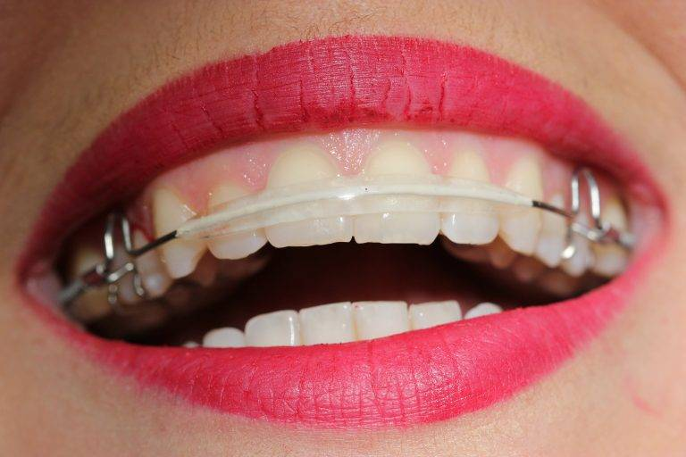

Orthodontics
Malalignment of the teeth is the primary concern of people these days, primarily because of the aesthetic look.
This treatment helps to align all the teeth in a proper position. This takes care of your functional as well as your aesthetic concerns.
It is performed using brackets and braces.

Time
Orthodontic treatment typically takes a minimum of 8 to 10 months to properly align the teeth.
In cases where only minor alignment is needed, advanced treatment methods can reduce the duration to 3 to 6 months.
Time Required
Orthodontic treatment requires a minimum of 8-10 months to align the teeth.
In some cases requiring only the alignment of teeth with the latest treatment modalities, the duration can be shortened to 3-6 months.
Cost
You have many varieties of brackets.
These include metal brackets, ceramic brackets, lingual brackets, Invisalign, and Clearpath.
The cost depends on the type of bracket and the treatment involved.
Metal
Ceramic
Lingual
Invisalign Aligners/ClearPath
Inman Aligners
FAQ's
Am I a candidate for braces treatment or is cosmetic dentistry an option?
If you are young and your teeth are misaligned but in the perfect shape and colour, then braces or orthodontic treatment is the right path for you. However, if you are unhappy with the shape or colour or texture of your teeth then looking at cosmetic dentistry is a sensible option. Even in such cases, braces can be used for pre-aligning the teeth where required. Here; pre-aligning with use of recent advances like Inman aligners can considerably shorten treatment time. The basic principle to follow here would be – ‘Treat young patients Idealistically and treat adult patients Realistically’.
How much time does it take for braces treatment to align the teeth?
Orthodontic treatment requires minimum of 8-10 months to align the teeth. In adult patients, where minor corrections for only front teeth are targeted, 6-7 months should be adequate. With use of Inman Aligners, the treatment span can be shortened to around 12-16 weeks. In the first visit, the braces will be placed, followed by monthly recalls to monitor and guide the progress.
What is the price range for orthodontic treatments?
The cost of orthodontic care varies based on the type of
braces you choose. Here's an approximate breakdown:
Metal Braces: Rs. 35,000
Ceramic Braces:
Rs. 45,000
Lingual Braces: Rs. 1,25,000
Invisalign Aligners: Rs. 1,20,000
Invisalign Full Treatment: Rs. 3,00,000
Inman Aligners: Rs. 70,000
Will I need to extract teeth for braces treatment?
In most cases, tooth extraction isn't required. However, it depends on factors such as jaw alignment and the specific results you are hoping to achieve. Your orthodontist will assess your situation with X-rays to determine if extraction is necessary.
Will the braces treatment cause a lot of discomfort or pain?
While braces treatment may cause mild discomfort, particularly during the first week, the pain usually diminishes as your mouth adjusts. It’s common to feel some soreness due to the pressure applied by the brackets, but this should not be unbearable.
Will my mouth be full of metal throughout the treatment process?
Thanks to advancements in orthodontic technology, there are now several options to avoid a mouthful of metal. Ceramic braces, clear aligners, and even bracketless options like Invisalign offer more aesthetic solutions for those looking to avoid visible metal during their treatment.